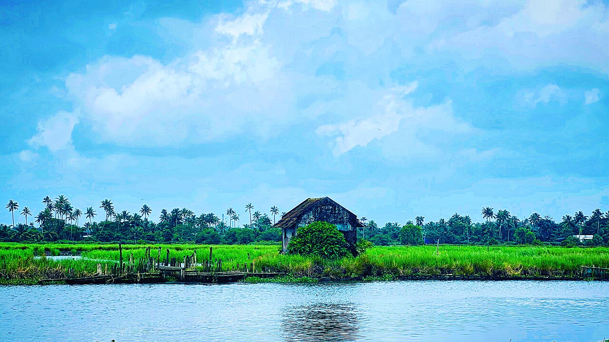
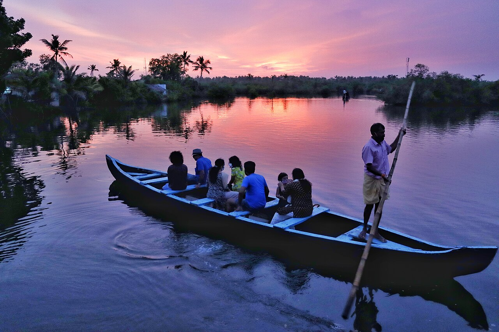
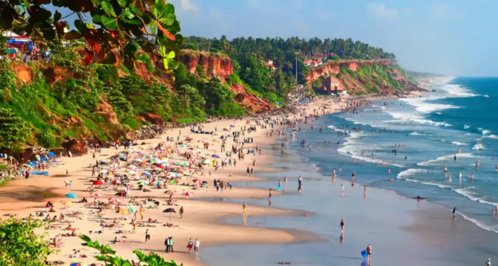
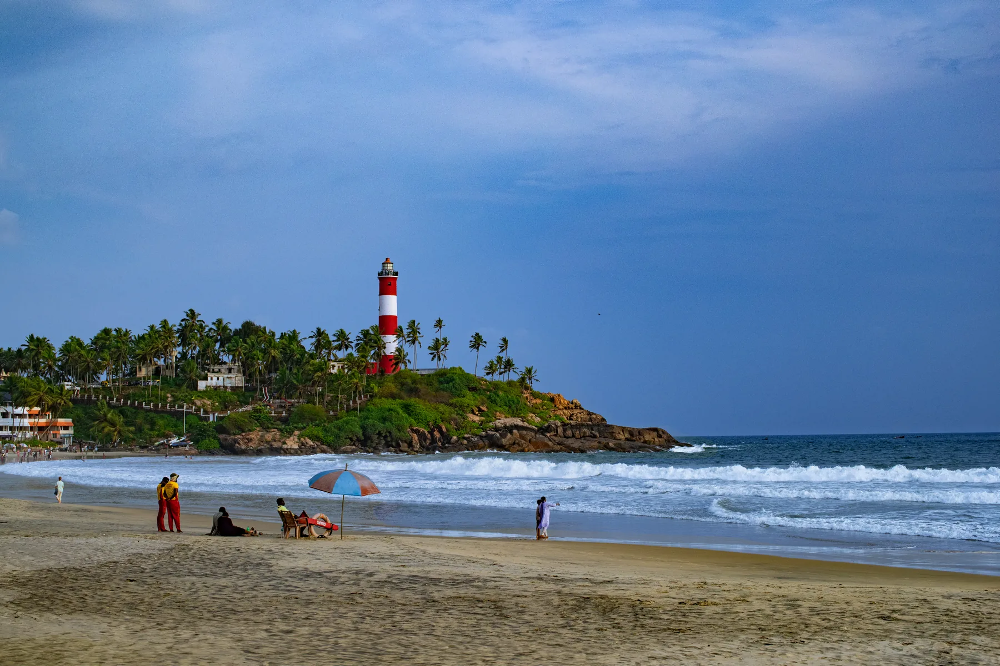

Heritage · Central Kerala
Kochi
Kerala's best-connected arrival city, combining harbour views, markets and contemporary urban life.
Best for: First-time visitors · Plan: All six
Grouped by Kerala Tourism's core travel themes: hills, backwaters, beaches, wildlife, culture, and heritage streets.
Filter by landscape or region, then open the full guide or place it on the journey map.
Showing all 16 destinations.
Kerala's best-connected arrival city, combining harbour views, markets and contemporary urban life.
Best for: First-time visitors · Plan: All sixWalkable streets, Chinese fishing nets, churches, galleries and the Mattancherry heritage quarter.
Best for: Culture lovers · Plan: 3, 5 and 7 days
Sunrise light, paddy fields, birdlife and quiet island roads within easy reach of Kochi.
Best for: Photography · Plan: 7 and 10 daysTea estates, cool highland air, viewpoints and plantation drives through Idukki.
Best for: Nature and couples · Plan: 5, 7 and 10 days
Periyar's forest landscape, spice country and nature activities with responsible operators.
Best for: Wildlife lovers · Plan: 5, 7 and 10 days
The classic houseboat base, with canals, paddy fields and water-linked village life.
Best for: Families and couples · Plan: 3, 5 and student
A quieter lakeside base for birding, short cruises, village experiences and unhurried stays.
Best for: Relaxed travellers · Plan: Senior plan
Narrow canals, homestays and small-canoe journeys through a lived-in backwater landscape.
Best for: Slow travel · Plan: 7 and 10 days
A cliff-backed coast with sea views, beach time, cafés and a relaxed finish to a longer route.
Best for: Coast and wellness · Plan: 7 days
Three established beaches, lighthouse views and convenient access from the state capital.
Best for: Easy coastal stays · Plan: Flexible add-on
Kerala's capital, with museums, heritage, local food and a major southern transport gateway.
Best for: Culture and connections · Plan: Coast add-on
Malabar food, maritime history, lively markets and a useful gateway to Wayanad.
Best for: Food travellers · Plan: 10-day add-on
Forests, waterfalls, plantations and ancient caves in Kerala's northern highlands.
Best for: Nature and active trips · Plan: 10 days
Theyam country, historic forts, weaving traditions and long beaches on the Malabar coast.
Best for: Culture lovers · Plan: 10-day add-on
Quiet northern backwaters, island scenery and a gentler water experience away from busier routes.
Best for: Offbeat travel · Plan: 10 days
A sea-facing fort, open coastline and an atmospheric final stop in far north Kerala.
Best for: Heritage and coast · Plan: 10 days